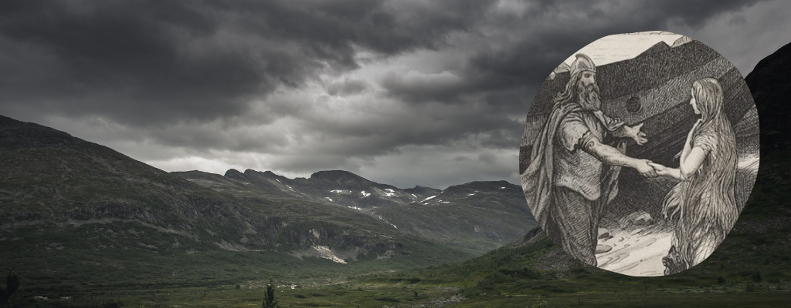

Ragnar Lodbrok
Inicio
Categoría
Presentación
Enlaces

Diversas imagnes sobre Ragnar Lodbrok | Dominio público
Contenido
Vida
Uniones matrimoniales
Incursiones
Baltico (840 DC)
Francia (845 DC)
Inglaterra (865 DC)
Final de Ragnar Lodbrok